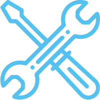

FORMATION
-
2016 - 2017
ParisOPENCLASSROOMS
Junior Web DeveloperDiplôme "Développeur web" enregistré au Répertoire National des Certifications Professionnelles.
Diplôme de niveau 5 (Bac+2) sur les cadres français et européen des certifications (European Qualifications Framework) -
2016 - 2017
ParisBACCALAURÉAT
Arts Graphiques et PhotographieDiplôme de réussite à l'examen d'état de fin d'études secondaries, section Arts Graphiques et Photographie
EXPÉRIENCE PROFESSIONELLE
-
Février 2020 - Poste actuel
GrenobleGRAPHISTE - PHOTOGRAPHE
FreelancerActuellement je travaille les weekends en freelance comme graphiste ou photographe événementiel
-
2011 - 2019
GrenobleCoiffeur
Salon Dessangeje travaille depuis des années comme coiffeur, actuellement je travaille juste en début de semaine car mon souhait serait de me convertir dans le développement web
2009 - 2010
Catane (It)GRAPHISTE - PHOTOGRAPHE
Studio CinePhotoProfessionalAprès mes études j'ai travaillé dans un studio comme photographe, pour la réalisation des shooting et, en même temps, je m'occupais du graphisme, pour la retouche des photos et la conception graphique des pages de magazines.
RECOMMANDATIONS
MAXIME KIEMAN
Directeur, Mon agence
Téléphone: 00.00.00.00
Email: name@email.comMAXIME KIEMAN
Directeur, Mon agence
Téléphone: 00.00.00.00
Email: name@email.com
-